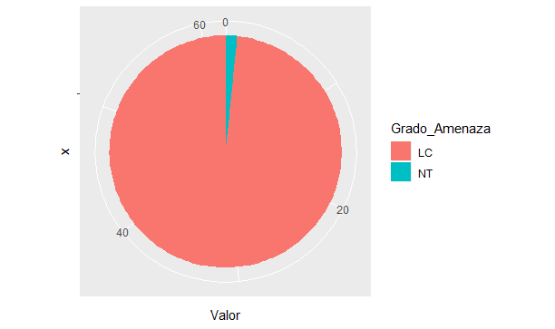

Especies Observadas
En el cuadro 1 se observa el total de las especies observadas en la gira a Coris de Cartago, 62 especies. También, se muestra el grado de amenaza de las poblaciones de cada especie (IUCN, 2019) y el estatus de las especies en Costa Rica, según la Lista Oficial de la Asociación Ornitologica Costaricense (2018).
Cuadro 1. Lista de las especies de aves observadas en Coris, Cartago.
| Especies | Estatus | Grado.amenaza.UICN | |
|---|---|---|---|
| 1 | American Coot (Fulica americana) | R-M | LC |
| 2 | Baltimore Oriole (Icterus galbula) | M | LC |
| 3 | Black Hawk-Eagle (Spizaetus tyrannus) | R | LC |
| 4 | Black Phoebe (Sayornis nigricans) | R | LC |
| 5 | Black Vulture (Coragyps atratus) | R | LC |
| 6 | Black-bellied Whistling-Duck (Dendrocygna autumnalis) | R | LC |
| 7 | Black-necked Stilt (Himantopus mexicanus) | R-M | LC |
| 8 | Blue-and-white Swallow (Pygochelidon cyanoleuca) | R-M | LC |
| 9 | Blue-winged Teal (Spatula discors) | M | LC |
| 10 | Broad-winged Hawk (Buteo platypterus) | M | LC |
| 11 | Brown Jay (Psilorhinus morio) | R | LC |
| 12 | Cabanis’s Ground-Sparrow (Melozone cabanisi) | R-END | LC |
| 13 | Cabanis’s Wren (Cantorchilus modestus) | R | LC |
| 14 | Cattle Egret (Bubulcus ibis) | R-M | LC |
| 15 | Common Gallinule (Gallinula galeata) | R-M | LC |
| 16 | Eastern Meadowlark (Sturnella magna) | R | NT |
| 17 | Great Egret (Ardea alba) | R-M | LC |
| 18 | Great Kiskadee (Pitangus sulphuratus) | R | LC |
| 19 | Great-tailed Grackle (Quiscalus mexicanus) | R | LC |
| 20 | Green Heron (Butorides virescens) | R-M | LC |
| 21 | Hoffmann’s Woodpecker (Melanerpes hoffmannii) | R-END | LC |
| 22 | House Sparrow (Passer domesticus) | R | LC |
| 23 | House Wren (Troglodytes aedon) | R | LC |
| 24 | Inca Dove (Columbina inca) | R | LC |
| 25 | Killdeer (Charadrius vociferus) | R-M | LC |
| 26 | Least Grebe (Tachybaptus dominicus) | R | LC |
| 27 | Lesser Goldfinch (Spinus psaltria) | R | LC |
| 28 | Lesson’s Motmot (Momotus lessonii) | R | LC |
| 29 | Little Blue Heron (Egretta caerulea) | R-M | LC |
| 30 | Louisiana Waterthrush (Parkesia motacilla) | M | LC |
| 31 | Melodious Blackbird (Dives dives) | R | LC |
| 32 | Mistletoe Tyrannulet (Zimmerius parvus) | R | LC |
| 33 | Montezuma Oropendola (Psarocolius montezuma) | R | LC |
| 34 | Morelet’s Seedeater (Sporophila morelleti) | R | LC |
| 35 | Mourning Dove (Zenaida macroura) | R-M | LC |
| 36 | Mourning Warbler (Geothlypis philadelphia) | M | LC |
| 37 | Northern Jacana (Jacana spinosa) | R | LC |
| 38 | Northern Rough-winged Swallow (Stelgidopteryx serripennis) | R-M | LC |
| 39 | Orange-billed Nightingale-Thrush (Catharus aurantiirostris) | R | LC |
| 40 | Red-billed Pigeon (Patagioenas flavirostris) | R | LC |
| 41 | Roadside Hawk (Rupornis magnirostris) | R | LC |
| 42 | Ruddy Ground-Dove (Columbina talpacoti) | R | LC |
| 43 | Rufous-capped Warbler (Basileuterus rufifrons) | R | LC |
| 44 | Rufous-collared Sparrow (Zonotrichia capensis) | R | LC |
| 45 | Rufous-tailed Hummingbird (Amazilia tzacatl) | R | LC |
| 46 | Short-tailed Hawk (Buteo brachyurus) | R-M | LC |
| 47 | Snowy Egret (Egretta thula) | R-M | LC |
| 48 | Social Flycatcher (Myiozetetes similis) | R | LC |
| 49 | Southern Lapwing (Vanellus chilensis) | R | LC |
| 50 | Squirrel Cuckoo (Piaya cayana) | R | LC |
| 51 | Steely-vented Hummingbird (Amazilia saucerottei) | R | LC |
| 52 | Summer Tanager (Piranga rubra) | M | LC |
| 53 | Tennessee Warbler (Oreothlypis peregrina) | M | LC |
| 54 | Tropical Kingbird (Tyrannus melancholicus) | R | LC |
| 55 | Turkey Vulture (Cathartes aura) | R-M | LC |
| 56 | White-tailed Kite (Elanus leucurus) | R | LC |
| 57 | White-tipped Dove (Leptotila verreauxi) | R | LC |
| 58 | White-winged Dove (Zenaida asiatica) | R-M | LC |
| 59 | Wilson’s Warbler (Cardellina pusilla) | M | LC |
| 60 | Yellow Warbler (Setophaga petechia) | R-M | LC |
| 61 | Yellow-bellied Siskin (Spinus xanthogastrus) | R | LC |
| 62 | Yellow-headed Caracara (Milvago chimachima) | R | LC |
Fuente: Asociación Ornitológica Costarricense (2018); IUCN (2019).
En la figura 3 se observa un gráfico pastel donde se muestra información sobre el estatus de la especie en Costa Rica, según la Lista oficial de la Asociación Ornitologica Costaricense (2018). Donde del total de especies 62 especies: 8 se clasifican como “Migratorias” (M), 36 corresponden a la clasificación “Residentes” (R), “Residentes-Endémicas” (R-END) abarcó 2 especies del total y 16 especies son “Residentes-Migratorias” (R-M).

Figura 3. Gráfico Pastel para el estatus de las especies observadas en la gira a Coris. Fuente: Asociación Ornitológica Costarricense (2018).
En la figura 4 se muestra un gráfico pastel donde se comtempla el grado de amenaza de las especies observadas, de acuerdo con la IUCN. Del total de las especies observadas solamente se encontraron dos clasificaciones con respecto al grado de amenaza, correspondientes a: “Menor preocupación” (LC) donde se clasificaron 61 del total de las especies y “Casi amenazada” (NT).

Figura 4. Gráfico para el grado de amenaza para las aves apreciadas en la gira a Coris. Fuente: IUCN (2019).